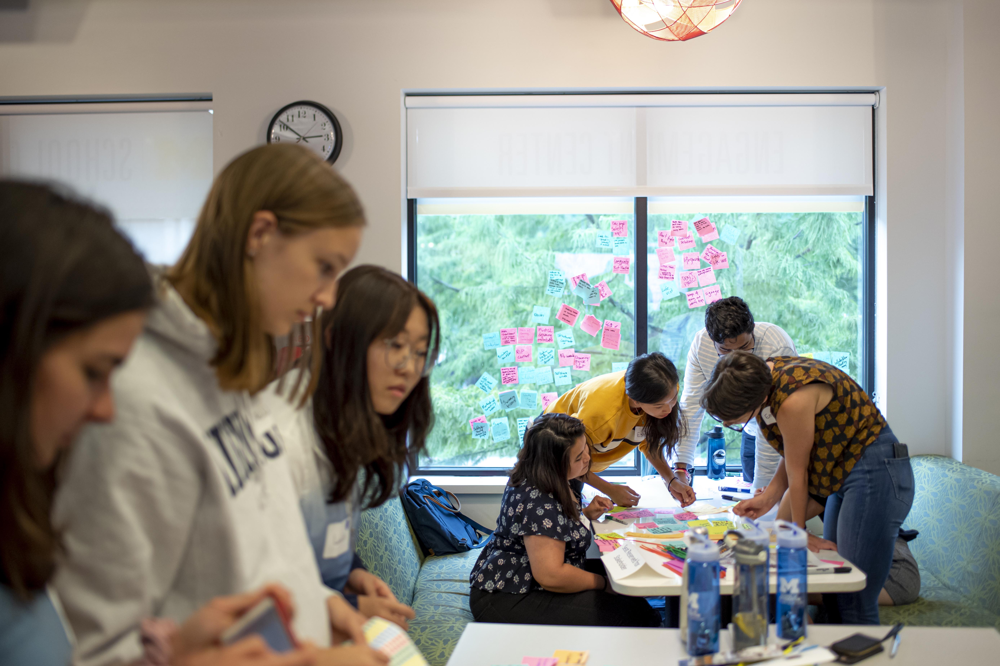
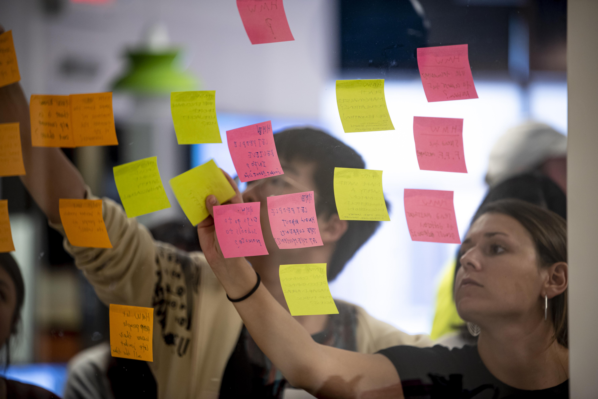

What is the CEW?
CEW+ uplifts women+ and underserved populations at the University of Michigan and nearby areas by championing their needs and delivering tools and opportunities to foster academic, financial, and career growth

Get Involved
- Events and Workshops
- Funding
- Counseling
- Advocacy Initiatives
Events and Workshops
We host a large variety of workshops that help increase visibility and offer academic and professional support regardless of your major or academic background. Listed below are different event categories that are most helpful to our students and staff.
- Community Action
- Career Development
- Financial Literacy
- Personal Development
Funding
CEW+ is dedicated to removing obstacles and enhancing accessibility through financial support. We provide U-M students, staff, faculty, and the surrounding community with scholarships, emergency grants, sponsorships, fellowships, and other resources to address diverse needs and life challenges.
- Scholarships
- Fellowships
- Graduation Grants
- Emergency Grants
- Students with Dependents
- Co-sponsoring Funding
Counseling
CEW+ offers free, inclusive counseling to help individuals at U-M and in the community navigate education, career, and life transitions. Our counselors provide personalized guidance in a supportive, non-judgmental space, recognizing the unique challenges faced by diverse backgrounds. Whether you're a student, professional, or exploring new opportunities, we are here to help you make informed decisions and achieve your goals.
Book an Appointment | Counseling at the CEW+
Advocacy Initiatives
CEW+ amplifies diverse voices through initiatives, groups, and lecture series designed to empower individuals and drive equity. Programs like the Financial Empowerment Initiative, Student Caregiver Resources, and the Annual Advocacy Symposium provide tools and support for personal and professional growth. CEW+ also honors impactful contributions through awards, visiting activist programs, and lectures while conducting and publishing research to advocate for systemic change.
